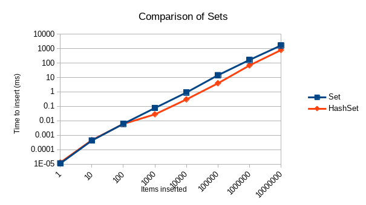

The hash set will outperform the ordered set when inserting into a large set. No clue which will be faster for small sets.
The code I used to test these algorithms can be found at https://github.com/khuldraeseth/cse431hw4. Clone the repository, move into p3, and stack run -- --output wherever-you-want-the-results.html to run these tests yourself. Compiles with -threaded.
I used sets (Data.Set.Set and Data.HashSet.HashSet) instead of maps because I saw no reason to do otherwise. I stopped at ten million, before either type of set exceeded three seconds, because of memory and hardware limitations.
See below for Criterion output. The results are summarized in this plot:
The hash set pulls away somewhere between 100 and 1000 items, and the ordered set is never able to catch up. What surprised me is how close the ordered sat managed to stay—I would expect the O(n) hash set to outperform the O(n log n) ordered set by more and more, but this never happened. In fact, the ordered set took less time as a proportion of that taken by the hash set to insert ten million items than to insert one thousand.
Under the conditions tested, a hash set could be more quickly filled with at least 100 items than an ordered set.